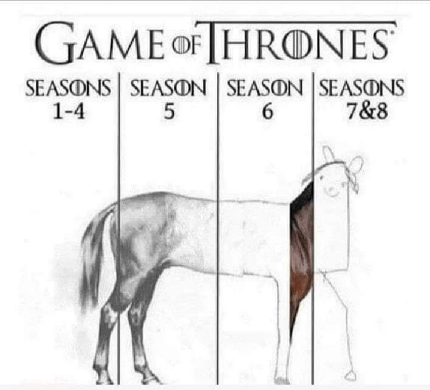

책 반납하러 가다가 찍음
아조씨가 좋아하는 후배가 추천해주어서 읽은 책.
뭐랄까, 자칫 잘못하면 칙칙해지거나 반짝 거리기만 하는 공상과학이라는 주제에 맑은 수채화의 느낌을 담은 소설이었다.
글에서 이런 느낌 나는거 좋아하는 사람에겐 추천.
하지만 아조씨 스타일엔 좀 안맞았음.
시작과 소재는 괜찮은데, 마무리 스토리가 빈약해서 기승전응? 으로 끝나는 단편이 너무 많음.

'기승전응?' 의 대표적인 사례 왕좌의 게임 (드라마)
중간중간 레즈비언 / 백합 (?) 느낌의 묘사들이 있는데 혹시 저자가 LGBT 이신가 하는 생각이 들긴 했음. 실제로 어떠한지
는 아조씨도 모름. 뭐 그런가보다 했음. 특이한건 단편의 주인공들이 모두 여자 또는 여자로 생각되는 중성적인 인물들임.
결론은 그냥 그랬습니다 ㅎㅎ 왈왈!